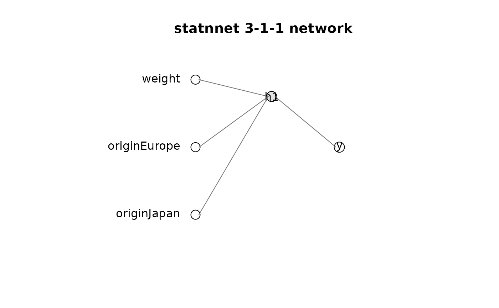

Draws the supported single-hidden-layer network. Input-to-hidden edges can
be annotated with individual-weight estimates or Wald p-values. Individual
weight results are diagnostics; grouped results from anova.statnnet() are
the intended covariate-level summaries.
Usage
plot_network(
x,
annotate = c("estimate", "p_value", "none"),
alpha = 0.05,
digits = 3L,
...
)Arguments
- x
A
statnnetobject.- annotate
One of
"estimate","p_value", or"none".- alpha
Significance threshold used to colour p-value annotations.
- digits
Number of annotation digits.
- ...
Additional graphical parameters passed to
graphics::plot().
Examples
data("auto_mpg", package = "statnnet")
example_data <- auto_mpg
example_data$mpg <- as.numeric(scale(example_data$mpg))
example_data$weight <- as.numeric(scale(example_data$weight))
set.seed(3)
fit <- nnet::nnet(
mpg ~ weight + origin,
data = example_data,
size = 1,
linout = TRUE,
decay = 0.1,
Hess = TRUE,
maxit = 500,
trace = FALSE
)
model <- statnnet(fit, data = example_data, response = "continuous")
plot_network(model, annotate = "none")
